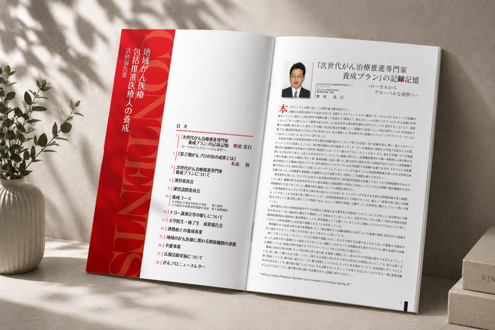
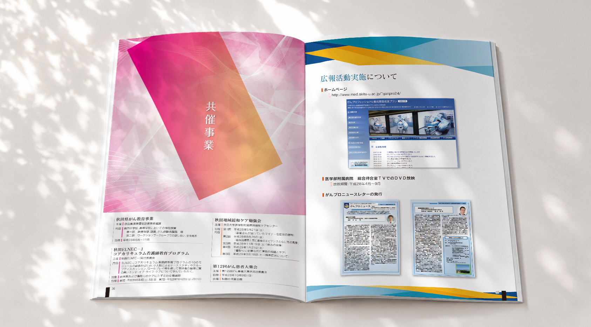

Works 情報を整理する
専門的な活動内容を、
読み進めやすい報告書へ。
表紙デザインとページ構成の大枠をご支給いただき、
中面のレイアウトとデザインを担当しました。
活動報告、養成コース、委員会、講演会、成果報告など、
専門的で情報量の多い内容を、読み進めやすく整理しています。

ご相談から完成まで
-
01
ご要望
既定の表紙とページ構成に合わせて、
活動内容をまとめた報告書を制作したい。 -
02
設計・制作
支給原稿をもとに、長文、図表、
写真、実績情報を整理し、
ページごとに情報の強弱とレイアウトを
設計しました。 -
03
完成
専門的な内容でも読み進めやすく、
活動の広がりと成果が伝わる報告書に。
完成デザイン
案件情報
- 業種
- 医療・大学・研究事業
- 制作物
- 活動報告書
- 仕様
- 全42ページ
- 掲載内容
- 事業概要・委員会・養成コース・講演会・成果報告など
- 担当範囲
- 中面ページレイアウト・デザイン・編集
- 支給素材
- 原稿・写真・図表・既定表紙・ページ構成指示
- 使用ツール
- Illustrator / Photoshop / InDesign
- 制作期間
- 20日
既定の構成に合わせながら、長文・図表・写真を整理。
専門性を保ちつつ、内容を追いやすい報告書に仕上げました。

専門的で情報量の多い報告書も、
読みやすい構成に整理できます。
原稿や図表、写真をもとに、
活動内容や成果が伝わるページ構成とデザインを
一緒に考えます。